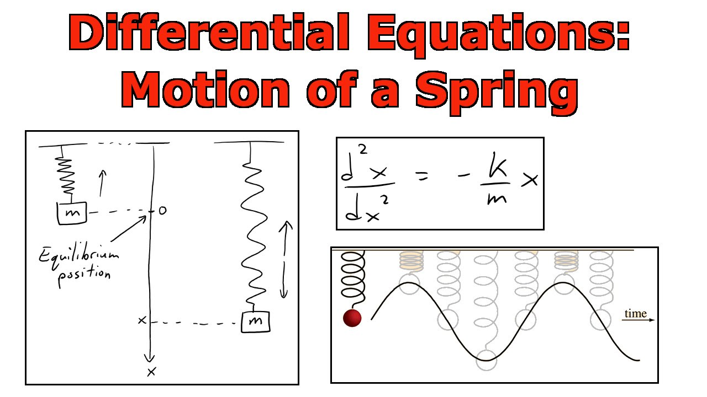
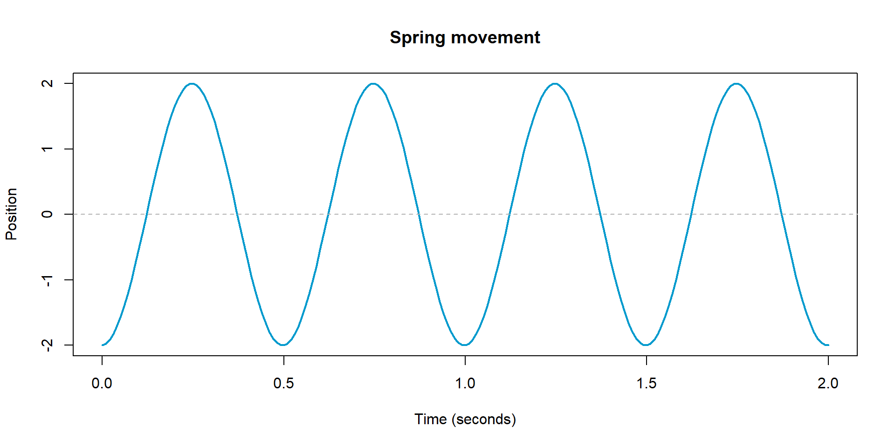
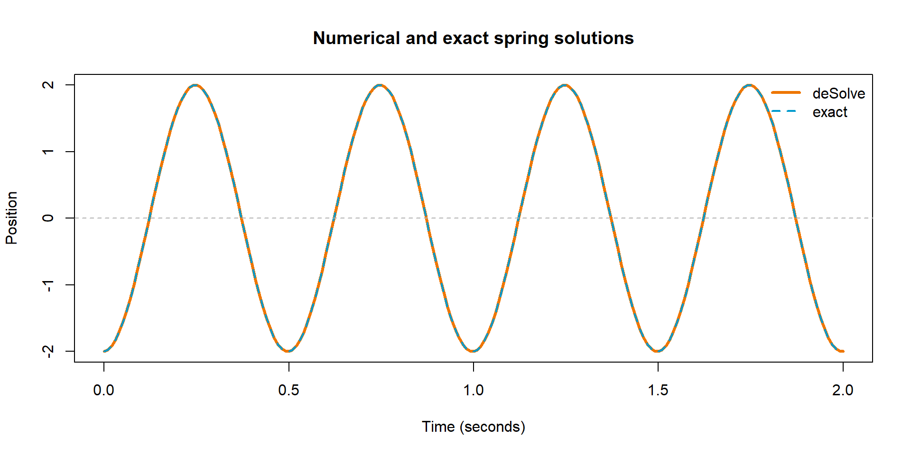
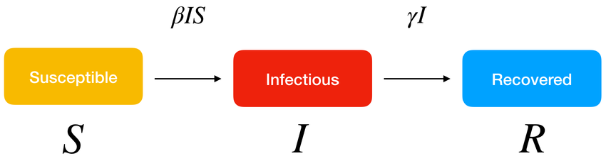
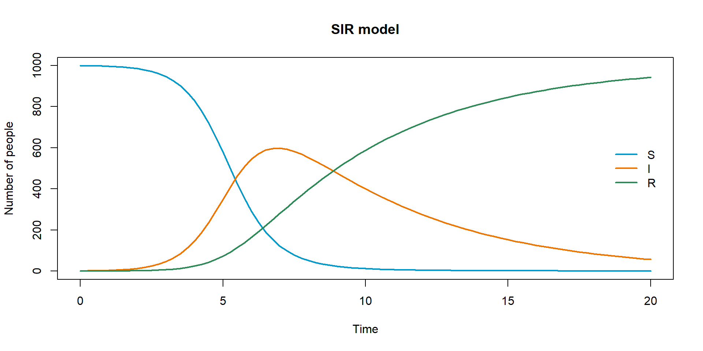
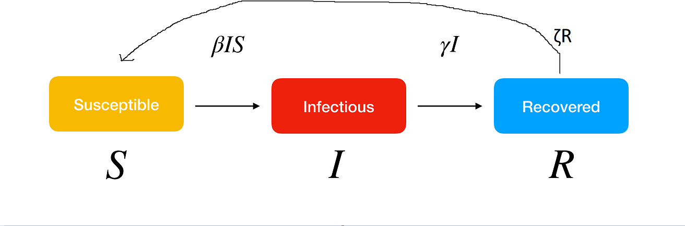
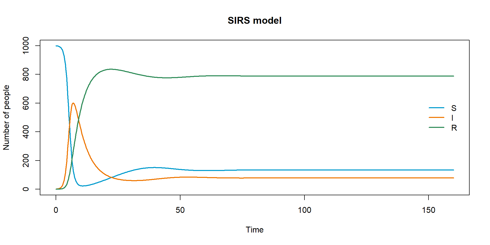
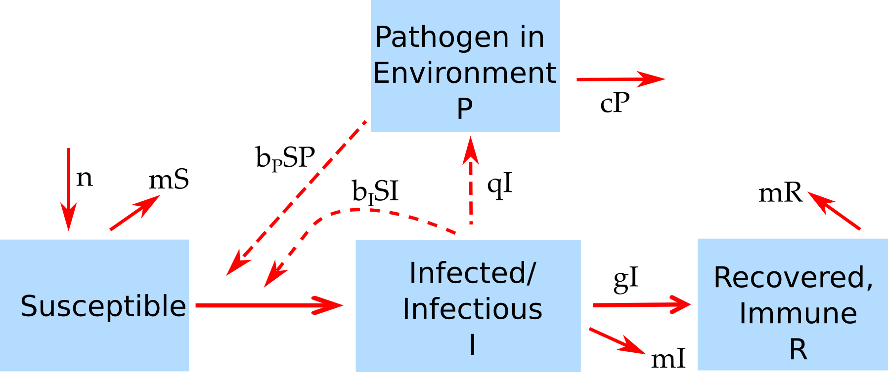

By the end of this block, you should be able to:
deSolve.deSolve::ode().A differential equation is an equation with a derivative in it:
\[ \frac{d^2x}{dt^2} + \omega^2 x = 0 \]
Here x is position, t is time, and \(\omega\) is a constant.
This equation describes a simple spring or pendulum.

A spring-mass system
Image source: https://www.youtube.com/watch?v=mk2TiR5dwVs
\[ f(x) = A\cos(\omega t) + B \sin(\omega t) \]
The constants A and B come from the starting position and starting speed.

deSolve package. These are tools that use good approximations to get the solution.deSolve wants first-order equations: only first derivatives are allowed.So we rewrite the spring in terms of position and velocity:
\[ \begin{aligned} \frac{dx}{dt} &= v \\ \frac{dv}{dt} &= -\omega^2 x \end{aligned} \]
If you don’t understand this, that’s ok! We won’t have to worry about this substitution in most Epi examples.
deSolve.spring_initial_state <- c(position = -2, velocity = 1)
spring_parameters <- c(omega = spring_omega)
spring_solution <- deSolve::ode(
y = spring_initial_state,
times = spring_times,
func = spring_ode,
parms = spring_parameters
)
head(spring_solution) time position velocity
[1,] 0.00 -2.000000 1.000000
[2,] 0.01 -1.974256 4.142081
[3,] 0.02 -1.917377 7.218844
[4,] 0.03 -1.830262 10.181770
[5,] 0.04 -1.714282 12.984132
[6,] 0.05 -1.571264 15.581717spring_df <- as.data.frame(spring_solution)
plot(
spring_df$time, spring_df$position,
type = "l", col = "darkorange2", lwd = 3,
xlab = "Time (seconds)", ylab = "Position",
main = "Numerical and exact spring solutions"
)
lines(
spring_analytical$time, spring_analytical$position,
col = "deepskyblue3", lty = 2, lwd = 2
)
abline(h = 0, col = "gray70", lty = 2)
legend(
"topright",
legend = c("deSolve", "exact"),
col = c("darkorange2", "deepskyblue3"),
lty = c(1, 2), lwd = c(3, 2), bty = "n"
)
The numerical solution and the exact solution are sitting on top of each other.
deSolve workflowdeSolve::ode() needs four things from you:
y: the starting state of the system.times: the time points where you want results.func: a function that calculates the derivatives.parms: the model parameters.
Source: DOI 10.3390/sym14122583
\[ \begin{aligned} \frac{dS}{dt} &= -\beta I S \\ \frac{dI}{dt} &= \beta I S - \gamma I \\ \frac{dR}{dt} &= \gamma I \end{aligned} \]
It is a true fact about differential equations that most (systems/equations) are impossible to solve via math magic, and we must resort to numerical solutions.
It is impossible to solve the SIR system analytically with normal math magic, although it is possible using functions you’ve never heard of.
We’ll walk through this SIR model example.
For this example:
beta: transmission rate.gamma: recovery rate.The starting state is a named vector with one value per compartment.
The names matter. They become the column names in the solution.
The function signature is always:
sir_solution <- deSolve::ode(
y = sir_initial_state,
times = sir_times,
func = sir_ode,
parms = sir_parameters
)
head(sir_solution) time S I R
[1,] 0.00 999.0000 1.000000 0.00000000
[2,] 0.25 998.5575 1.383405 0.05906864
[3,] 0.50 997.9458 1.913432 0.14077604
[4,] 0.75 997.1004 2.645815 0.25377332
[5,] 1.00 995.9329 3.657150 0.40999128
[6,] 1.25 994.3217 5.052451 0.62586673ode() returns a matrix-like object. The first column is time; the remaining columns are your compartments.
sir_df <- as.data.frame(sir_solution)
sir_colors <- c(S = "deepskyblue3", I = "darkorange2", R = "seagreen4")
matplot(
sir_df$time, sir_df[, c("S", "I", "R")],
type = "l", lty = 1, lwd = 2, col = sir_colors,
xlab = "Time", ylab = "Number of people", main = "SIR model"
)
legend(
"right", inset = 0.02, legend = names(sir_colors),
col = sir_colors, lty = 1, lwd = 2, bty = "n"
)
Before trusting a simulation, ask:
Modify the SIR model so recovered people lose immunity and become susceptible again. Call the new parameter zeta.

Source: DOI 10.3390/sym14122583 with course edit
Use:
sirs_parameters <- c(beta = 0.0015, gamma = 0.20, zeta = 0.02)
sirs_initial_state <- c(S = 999, I = 1, R = 0)
sirs_times <- seq(0, 160, by = 0.25)Plot the result and compare it with the SIR curve.
The SIRS equations are:
\[ \begin{aligned} \frac{dS}{dt} &= -\beta S I + \zeta R \\ \frac{dI}{dt} &= \beta S I - \gamma I \\ \frac{dR}{dt} &= \gamma I - \zeta R \end{aligned} \]
You only need to change two things:
zeta <- parameters["zeta"].zeta * R flow into dS and out of dR.sirs_solution <- deSolve::ode(
y = sirs_initial_state,
times = sirs_times,
func = sirs_ode,
parms = sirs_parameters
)
sirs_df <- as.data.frame(sirs_solution)
head(sirs_df) time S I R
1 0.00 999.0000 1.000000 0.00000000
2 0.25 998.5577 1.383405 0.05892916
3 0.50 997.9464 1.913432 0.14014973
4 0.75 997.1020 2.645816 0.25218121
5 1.00 995.9361 3.657155 0.40677265
6 1.25 994.3274 5.052466 0.62010994
With waning immunity, infection can persist at a low level instead of dying out after a single epidemic wave.
Prompt
For a faster student or take-home extension, add an environmental pathogen compartment P.

Source: Andreas Handel’s DSAIDE package
Use these equations:
\[ \begin{aligned} \frac{dS}{dt} &= n - b_I I S - b_P P S - mS \\ \frac{dI}{dt} &= b_I I S + b_P P S - gI - mI \\ \frac{dR}{dt} &= gI - mR \\ \frac{dP}{dt} &= qI - cP \end{aligned} \]
Hint
Add a fourth state named P. Your derivative function should return four values: dS, dI, dR, and dP.
Solution outline
Start from sirs_ode(), add P <- state["P"], add parameters named n, b_I, b_P, m, g, q, and c, then return:
Set n = 0 and m = 0 for the first run if you want to focus only on the environmental transmission path.
The reusable pattern is:
list(c(...)).